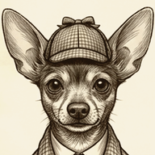
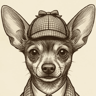
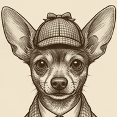
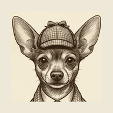
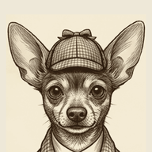
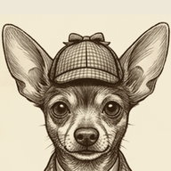
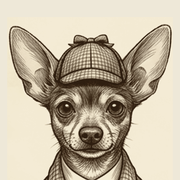

Sepia strength
Same crop, three amounts of warmth. Shadows go to #3A2614, highlights to the parchment #F2E7CE — the app’s own paper tone.
as cut

55%

80%

100%
Same crop, three amounts of warmth. Shadows go to #3A2614, highlights to the parchment #F2E7CE — the app’s own paper tone.



Play crops to a circle. Sitting her lower lets her be bigger — the ears use the top of the circle and the collar falls out of the bottom, where nothing is lost.



